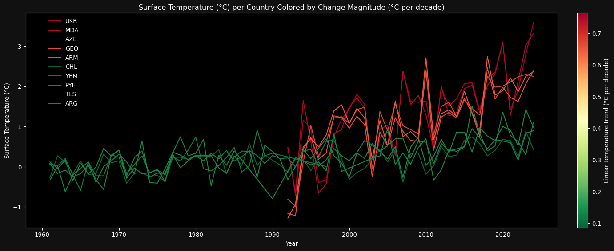

import os # To differentiate between edit mode and save mode of kaggle
# Suppress warnings
import warnings
# --- Data Handling ---
import pandas as pd # DataFrames and data manipulation
import numpy as np # Numerical computations and arrays
# --- Display Utilities ---
from IPython.display import display, IFrame, Image # Pretty-printing DataFrames in notebooks, plot interactive plot saved to HTML
# --- Plotting Libraries ---
import matplotlib.pyplot as plt # Base plotting
import matplotlib.cm as cm # Colormaps
import matplotlib.colors as mcolors # Color normalization
from matplotlib.colors import LinearSegmentedColormap, TwoSlopeNorm # Custom color scales
import matplotlib.patches as mpatches # Custom legend elements
import seaborn as sns # Statistical plotting
import plotly.graph_objects as go # Interactive plotting
# --- Geospatial Plotting ---
import geopandas as gpd # Geospatial data and shapefiles
# --- Interactive Widgets ---
from ipywidgets import interact, Dropdown, IntSlider, widgets # UI controls for notebooks
# --- Statistical Analysis ---
from scipy.stats import pearsonr # Pearson correlation
# --- Machine Learning & Modeling ---
from sklearn.linear_model import LinearRegression # Linear models
from sklearn.preprocessing import PolynomialFeatures, StandardScaler # Feature engineering
from sklearn.metrics import r2_score # Regression evaluation
from sklearn.pipeline import make_pipeline # Pipelines
from sklearn.decomposition import PCA # Principal Component Analysis
from sklearn.preprocessing import StandardScaler # for PCA's scalers
# --- Smoothing ---
from statsmodels.nonparametric.smoothers_lowess import lowess # LOESS smoothing
# --- Utilities ---
from collections import OrderedDict # Ordered mappingsClimate Change, Emissions & Demography: A Global Data Analysis
Project Context
This project is part of a data science career-building portfolio, designed to showcase the use of Python for data analysis and visualization in the context of real-world, global-scale issues.
The goal is to publish a well-documented, insightful notebook on Kaggle that demonstrates: - Data cleaning and wrangling - Exploratory data analysis (EDA) - Regression and dimensionality reduction (PCA) - Geographic visualization - Interpretation and communication of findings
Data Sources
This analysis uses freely available, reputable datasets from: - IMF Climate Change Indicators Dashboard - World Bank Open Data
Objective
We explore how countries vary in: - Climate change trends (°C/decade) - Greenhouse gas (GHG) emissions - Population growth
Through this, we aim to uncover global patterns and inequalities in climate impact, contribution, and demographic change, using accessible modeling techniques such as linear regression and PCA.
This notebook not only addresses a critical global issue, but also serves as a practical demonstration of end-to-end data analysis in Python for potential collaborators or employers.
Disclaimer: This notebook is intended as a data science portfolio project, not a scientific publication.
It uses publicly available data and simplified models to explore global patterns in climate, emissions, and population.
While care was taken to ensure accuracy, the analysis is exploratory in nature and meant primarily to demonstrate technical and analytical skills in Python.
# Suppress specific RuntimeWarnings from numpy (invalid value encountered)
warnings.filterwarnings("ignore")#Load the data frame containing the climate indicator for each coutry
df_ALLC_STC = pd.read_csv(r"data/Indicator_3_1_Climate_Indicators_Annual_Mean_Global_Surface_Temperature_8202930366966918798.csv", encoding='latin1')
display(df_ALLC_STC.head(1))
print('Number of ISO3 codes:', len(set(df_ALLC_STC['ISO3'])))
print(set(df_ALLC_STC['Indicator']))
print(set(df_ALLC_STC['CTS Name']))| ObjectId | Country | ISO2 | ISO3 | Indicator | Unit | Source | CTS Code | CTS Name | CTS Full Descriptor | ... | 2015 | 2016 | 2017 | 2018 | 2019 | 2020 | 2021 | 2022 | 2023 | 2024 | |
|---|---|---|---|---|---|---|---|---|---|---|---|---|---|---|---|---|---|---|---|---|---|
| 0 | 1 | Afghanistan, Islamic Rep. of | AF | AFG | Temperature change with respect to a baseline ... | Degree Celsius | Food and Agriculture Organization of the Unite... | ECCS | Surface Temperature Change | Environment, Climate Change, Climate and Weath... | ... | 1.139 | 1.588 | 1.63 | 1.597 | 0.951 | 0.552 | 1.418 | 1.967 | 1.748 | 2.188 |
1 rows × 74 columns
Number of ISO3 codes: 231
{'Temperature change with respect to a baseline climatology, corresponding to the period 1951-1980'}
{'Surface Temperature Change'}#Filter ISO3 codes corrsponding to real countries (not continents, world, etc) using data from https://public.opendatasoft.com/explore/dataset/countries-codes/export/
df_Ccode = pd.read_csv(
"data/countries-codes.csv",
encoding="latin1")
display(df_Ccode.head(1))
print('Number of ISO3 codes:', len(set(df_Ccode['ISO3 CODE'])))| ISO2 CODE | ISO3 CODE | ONU CODE | LABEL EN | LABEL FR | LABEL SP | |
|---|---|---|---|---|---|---|
| 0 | ES | ESP | 724 | Spain | Espagne | España |
Number of ISO3 codes: 247# Ordered unique list of ISO3 codes from df_ALLC_STC
iso3_allc = list(OrderedDict.fromkeys(df_ALLC_STC['ISO3']))
# Reference set from df_Ccode (all valid ISO3 country codes)
valid_iso3 = set(df_Ccode['ISO3 CODE'])
# Find invalid codes (those in df_ALLC_STC but not in df_Ccode)
invalid_iso3 = [code for code in iso3_allc if code not in valid_iso3]
print("Invalid ISO3 codes:", invalid_iso3)Invalid ISO3 codes: ['AFRTMP', 'AMETMP', 'ASIATMP', 'EURTMP', 'VAT', 'MYT', 'FSM', 'OCETMP', 'PCN', 'SJM', 'WLD']# Remove rows where ISO3 is in invalid_iso3
df_ALLC_STC_cleaned = df_ALLC_STC[~df_ALLC_STC['ISO3'].isin(invalid_iso3)].copy()
# reset index
df_ALLC_STC_cleaned.reset_index(drop=True, inplace=True)
# Check result
print('Number of ISO3 codes before:', len(set(df_ALLC_STC['ISO3'])))
print('Number of ISO3 codes after:', len(set(df_ALLC_STC_cleaned['ISO3'])))Number of ISO3 codes before: 231
Number of ISO3 codes after: 220df_display = df_Ccode[['LABEL EN', 'ISO3 CODE']].dropna().sort_values('LABEL EN')
df_display.columns = ['Country', 'ISO3']
fig = go.Figure(data=[go.Table(
header=dict(values=["Country", "ISO3"]),
cells=dict(values=[df_display['Country'], df_display['ISO3']])
)])
fig.show()#save the name of the climate indicator to plot in legend and axes
indicator_name = str(df_ALLC_STC_cleaned['Indicator'][0])[0:18]
# Melt only columns that are years from 1961 to 2024
df_long = df_ALLC_STC_cleaned.melt(
id_vars=['ISO3'],
value_vars=[col for col in df_ALLC_STC_cleaned.columns if col.isdigit() and 1961 <= int(col) <= 2024],
var_name='Year',
value_name='Value'
)
# convert 'Year' column to integer
df_long['Year'] = df_long['Year'].astype(int)
print(df_long.head())
df_long = df_long.sort_values(['ISO3', 'Year']) ISO3 Year Value
0 AFG 1961 -0.096
1 ALB 1961 0.643
2 DZA 1961 0.154
3 ASM 1961 0.075
4 AND 1961 0.736#################################################################################################################
#################################################################################################################
###############################Plot the mean temperature change over the world##################################
###################################and allow to compare to local change for each#################################
################################################separated country################################################
#################################################################################################################
#################################################################################################################
# Setup
indicator_name = 'Surface Temperature'
years = sorted(df_long['Year'].unique())
pivot_df = df_long.pivot(index='Year', columns='ISO3', values='Value')
countries = sorted(pivot_df.columns)
# Bootstrap global mean
n_bootstrap = 1000
bootstrap_means = np.empty((len(years), n_bootstrap))
for i in range(n_bootstrap):
sampled_countries = np.random.choice(countries, size=len(countries), replace=True)
sampled_data = pivot_df[sampled_countries]
bootstrap_means[:, i] = sampled_data.mean(axis=1, skipna=True)
mean_bootstrap = np.nanmean(bootstrap_means, axis=1)
lower_ci = np.nanpercentile(bootstrap_means, 2.5, axis=1)
upper_ci = np.nanpercentile(bootstrap_means, 97.5, axis=1)
# --- Create traces ---
fig = go.Figure()
# Global mean line
fig.add_trace(go.Scatter(
x=years,
y=mean_bootstrap,
mode='lines',
name='Global Mean',
line=dict(color='red', dash='dashdot'),
visible=True
))
# Global CI fill
fig.add_trace(go.Scatter(
x=years + years[::-1],
y=list(upper_ci) + list(lower_ci[::-1]),
fill='toself',
fillcolor='rgba(255,0,0,0.2)',
line=dict(color='rgba(255,255,255,0)'),
name='95% Bootstrap CI',
hoverinfo="skip",
showlegend=True,
visible=True
))
# Country traces (one per country)
for code in countries:
fig.add_trace(go.Scatter(
x=years,
y=pivot_df[code],
mode='lines',
name=f'{code}',
visible=False,
line=dict(width=2)
))
# --- Build dropdown menu ---
dropdown_buttons = [
dict(
label='None',
method='update',
args=[{"visible": [True, True] + [False] * len(countries)},
{"title": f"Global Mean of {indicator_name} with 95% CI"}]
)
]
for i, code in enumerate(countries):
vis = [True, True] + [j == i for j in range(len(countries))]
dropdown_buttons.append(
dict(
label=code,
method='update',
args=[
{"visible": vis},
{"title": f"Global vs {code} — {indicator_name}"}
]
)
)
# --- Update layout with dropdown on the left ---
fig.update_layout(
updatemenus=[
dict(
type='dropdown',
direction='down',
showactive=True,
buttons=dropdown_buttons,
x=1.05,
xanchor="left",
y=0.6,
yanchor="top",
bgcolor='rgba(30,30,30,0.7)',
bordercolor='gray',
font=dict(color='lightgray')
)
],
annotations=[
dict(
text="Plot a<br>single country:",
x=1.05,
y=0.65,
xref="paper",
yref="paper",
showarrow=False,
font=dict(size=13, color="lightgray"),
align="left",
xanchor='left')
],
template='plotly_dark',
title=f"Global Mean of {indicator_name} with 95% CI",
xaxis_title='Year',
yaxis_title=indicator_name,
font=dict(family='Georgia', size=13),
height=500,
width=700,
margin=dict(l=40, r=20, t=70, b=40),
legend=dict(bgcolor='rgba(0,0,0,0)', borderwidth=0)
)
fig.write_html("interactive_plot.html", include_plotlyjs='cdn')
IFrame(src="interactive_plot.html", width=900, height=500)from sklearn.linear_model import LinearRegression
import matplotlib.pyplot as plt
import matplotlib.cm as cm
import matplotlib.colors as mcolors
import seaborn as sns
import numpy as np
import pandas as pd
# ---Fit linear regression for each country ---
df_valid = df_long.dropna(subset=['Value']).sort_values(['ISO3', 'Year'])
slope_by_country = {}
for country, group in df_valid.groupby('ISO3'):
X = group['Year'].values.reshape(-1, 1)
y = group['Value'].values
if len(y) > 30:
model = LinearRegression().fit(X, y)
slope_by_country[country] = model.coef_[0] * 10 # °C per decade
slope_by_country = pd.Series(slope_by_country)
# ---Select top and bottom 5 warming countries ---
top_5_increase = slope_by_country.sort_values(ascending=False).head(5)
small_pos_slopes = slope_by_country[slope_by_country > 0]
bottom_5_increase = small_pos_slopes.sort_values().head(5)
selected_countries = top_5_increase.index.tolist() + bottom_5_increase.index.tolist()
# ---Assign gradient colors based on slope values ---
cmap = cm.RdYlGn_r
vmin = slope_by_country.min()
vmax = slope_by_country.max()
# Use diverging colormap if needed
if vmin < 0 and vmax > 0:
norm = mcolors.TwoSlopeNorm(vmin=vmin, vcenter=0, vmax=vmax)
else:
norm = mcolors.Normalize(vmin=vmin, vmax=vmax)
country_colors = {
country: cmap(norm(slope_by_country[country]))
for country in selected_countries
}
# ---Plot lines ---
plt.style.use('dark_background')
fig, ax = plt.subplots(figsize=(16, 6))
for country in selected_countries:
df_country = df_long[df_long['ISO3'] == country]
sns.lineplot(data=df_country, x='Year', y='Value', label=country,
color=country_colors[country], ax=ax)
# ---Add colorbar ---
sm = cm.ScalarMappable(norm=norm, cmap=cmap)
sm.set_array([]) # dummy array just to satisfy colorbar
cbar = fig.colorbar(sm, ax=ax, orientation='vertical', pad=0.03)
cbar.set_label('Linear temperature trend (°C per decade)', color='white')
cbar.ax.yaxis.label.set_color('white')
cbar.ax.tick_params(colors='white')
# ---Final plot formatting ---
ax.set_title(f'{indicator_name} (°C) per Country Colored by Change Magnitude (°C per decade)')
ax.set_xlabel('Year')
ax.set_ylabel(f'{indicator_name} (°C)')
ax.grid(False)
ax.legend(frameon=False, loc='center right', bbox_to_anchor=(0.11, 0.77))
plt.tight_layout()
plt.rcParams.update({
'font.family': 'Georgia',
'axes.labelcolor': 'lightgray',
'xtick.color': 'lightgray',
'ytick.color': 'lightgray',
'figure.facecolor': '#111',
'axes.facecolor': '#222',
'savefig.facecolor': '#111'
})
plt.savefig("Surface_Temperature.png", bbox_inches="tight")
plt.close()
display(Image("Surface_Temperature.png"))
# --- 1. Top 5 largest warming trends (highest positive slopes) ---
top_5_increase = slope_by_country.sort_values(ascending=False).head(5)
# --- 2. Top 5 smallest warming trends (still positive but smallest) ---
small_pos_deltas = slope_by_country[slope_by_country > 0]
bottom_5_increase = small_pos_deltas.sort_values().head(5)
# --- 3. Combine into a single list of selected countries ---
selected_countries = top_5_increase.index.tolist() + bottom_5_increase.index.tolist()
# --- 4. Countries with stable or cooling trend (Δ <= 0 °C/decade) ---
improved_countries = slope_by_country[slope_by_country <= 0]
# --- 5. Summary Message ---
if improved_countries.empty:
print("No countries show a stable or cooling trend (≤ 0 °C/decade).")
else:
print(f"{len(improved_countries)} countries show a stable or cooling trend (≤ 0 °C/decade):")
print(improved_countries.sort_values())
# --- 6. Display Top 5 largest & smallest warming trends ---
print("🔺Top 5 Countries with the Largest Warming Trends (°C/decade):")
print(top_5_increase)
print("\n🔻 Top 5 Countries with the Smallest Positive Warming Trends (°C/decade):")
print(bottom_5_increase)No countries show a stable or cooling trend (≤ 0 °C/decade).
🔺Top 5 Countries with the Largest Warming Trends (°C/decade):
UKR 0.763991
MDA 0.750384
AZE 0.674375
GEO 0.661912
ARM 0.650528
dtype: float64
🔻 Top 5 Countries with the Smallest Positive Warming Trends (°C/decade):
CHL 0.085244
YEM 0.116262
PYF 0.129335
TLS 0.131330
ARG 0.133774
dtype: float64Linear Temperature Trends by Country (°C/decade)
To quantify how climate indicators (e.g., surface temperature) have changed over time, we applied simple linear regression to each country’s time series data. The slope of the fitted line gives the average rate of temperature change per year, which we scaled to °C per decade for easier interpretation.
Why Linear Regression?
Linear regression is a straightforward method to model long-term trends, offering a first-order estimate of how an indicator changes over time. It captures:
- The direction of change (warming or cooling)
- The rate of change (slope in °C/year → °C/decade)
- While it doesn’t capture non-linear effects or fluctuations, it’s widely used as a baseline trend indicator.
🔺 Top 5 Countries with the Largest Warming Trends (°C/decade)
| Country | Trend (°C/decade) |
|---|---|
| Zimbabwe (ZWE) | 0.148 |
| Ukraine (UKR) | 0.076 |
| Moldova (MDA) | 0.075 |
| Azerbaijan (AZE) | 0.067 |
| Georgia (GEO) | 0.066 |
These countries are experiencing the fastest warming, with Zimbabwe showing a particularly steep trend of nearly 0.15°C per decade, well above the global average.
🔻 Top 5 Countries with the Smallest Positive Warming Trends (°C/decade)
| Country | Trend (°C/decade) |
|---|---|
| Chile (CHL) | 0.009 |
| Yemen (YEM) | 0.012 |
| French Polynesia (PYF) | 0.013 |
| Timor-Leste (TLS) | 0.013 |
| Argentina (ARG) | 0.013 |
These countries still show warming, but at a much slower pace, close to 0.01°C per decade, which may reflect regional climatic factors, buffering effects, or measurement variability.
No Cooling Countries Identified
** No countries show a stable or cooling trend (≤ 0 °C/decade).**
This suggests that, according to the linear trend from 1961–2022, every country with sufficient data is experiencing some level of warming. This aligns with the broader global warming consensus observed in both satellite and ground station data.
Final Thoughts
Linear trend analysis offers a clear and interpretable metric for comparing warming rates across countries. However, it should be complemented with more nuanced methods (e.g., rolling averages, non-linear fits) to fully capture short-term dynamics, regional patterns, and variability in climate behavior.
# #Load the geopanda dataset to plot world maps
# world_df = gpd.read_file(gpd.datasets.get_path('naturalearth_lowres'))
# # Fix missing/ambiguous ISO codes if needed
# world_df = world_df.rename(columns={'iso_a3': 'cca3'})
# #Remove non-used columns
# world_df.drop(columns=['pop_est', 'gdp_md_est'], inplace=True)
# #Save the file to use in other platform where it is not available
# world_df.to_file("world_cleaned.geojson", driver="GeoJSON")
#Load the geopanda dataset saved from Kaggle notebook
world_df = gpd.read_file("data/world_cleaned.geojson")#################################################################################################################
#################################################################################################################
###############################Plot this new climate change trend (slope)########################################
##########################################over a wolrd map#######################################################
#################################################################################################################
#################################################################################################################
#################################################################################################################
# Convert slope_by_country to DataFrame
delta_df = slope_by_country.rename('delta_indicator').reset_index()
delta_df.rename(columns={'index': 'cca3'}, inplace=True)
# Merge with GeoDataFrame
world_with_climate = world_df.merge(delta_df, how='left', on='cca3')
# Define color scale
vmax = world_with_climate['delta_indicator'].abs().quantile(0.99)
vmin = -vmax
norm = TwoSlopeNorm(vmin=vmin, vcenter=0, vmax=vmax)
# Create custom colormap
custom_cmap = LinearSegmentedColormap.from_list(
"blue_black_red",
["blue", "black", "red"],
N=256
)
# Separate countries with/without data
has_data = world_with_climate[world_with_climate['delta_indicator'].notna()]
missing_data = world_with_climate[world_with_climate['delta_indicator'].isna()]
# Plot
plt.rcParams['font.family'] = 'Georgia'
fig, ax = plt.subplots(figsize=(14, 8), facecolor='black')
# Countries with data
has_data.plot(
column='delta_indicator',
cmap=custom_cmap,
norm=norm,
linewidth=0.4,
edgecolor='white',
ax=ax,
legend=True,
legend_kwds={
'label': 'Temperature Trend (°C per decade)',
'orientation': 'horizontal',
'shrink': 0.5,
'pad': 0.02
}
)
# Countries without data
missing_data.plot(
color='none',
edgecolor='white',
hatch='///',
linewidth=0.4,
ax=ax
)
# Styling
ax.set_facecolor('black')
ax.set_title(
'Rate of Temperature Change by Country (°C per Decade)',
fontsize=16,
color='white'
)
ax.set_axis_off()
# Style colorbar
cbar = ax.get_figure().axes[-1]
cbar.set_position([0.65, 0.12, 0.25, 0.02])
cbar.set_facecolor('black')
cbar.tick_params(colors='white')
cbar.set_title("°C per decade", color='white', fontsize=10)
# Add manual legend for missing data (hatched areas)
import matplotlib.patches as mpatches
# Create a patch with hatching
hatch_patch = mpatches.Patch(
facecolor='none',
edgecolor='white',
hatch='///',
label='Missing Data'
)
# Add to the plot (positioned near the colorbar)
ax.legend(
handles=[hatch_patch],
loc='lower center',
bbox_to_anchor=(0.9, -0.08),
frameon=False,
labelcolor='white'
)
plt.tight_layout()
plt.savefig("Rate_Temperature_Change.png", bbox_inches="tight")
plt.close()
display(Image("Rate_Temperature_Change.png"))Global Warming Trends Visualized on the World Map
To complement our quantitative analysis, we mapped the linear temperature trends by country across the globe. Each country is colored based on its warming rate (°C/decade), derived from simple linear regression on its historical temperature data (1961–2022).
What Does the Map Show?
- All countries with sufficient data show a positive trend, confirming that no region is cooling over the long term.
- Darker shades represent countries experiencing slower warming.
Regional Highlights
Northern countries—including Russia, Eastern Europe, and Canada—stand out with higher warming trends. This reflects a well-known climate phenomenon:
> Polar and sub-polar amplification, where higher latitudes warm faster due to snow/ice feedbacks and changes in atmospheric circulation.Equatorial and some Southern Hemisphere countries show weaker warming trends, though still positive. These include parts of South America, Southeast Asia, and Oceania.
Interpretation Notes
- This map provides an intuitive, spatial view of how climate change is unevenly distributed, despite being global phenomenon.
- Geographic patterns help identify climate hotspots, support policy targeting, and inspire region-specific climate adaptation strategies.
#################################################################################################################
#################################################################################################################
###############################Load a dataset to study the impact of population #################################
##########################################growth on climate change###############################################
#################################################################################################################
#################################################################################################################
#################################################################################################################
df_ALLC_pop = pd.read_csv(
"data/API_SP.POP.TOTL_DS2_en_csv_v2_38144.csv",
skiprows=4
)
display(df_ALLC_pop.head(1))
df_ALLC_pop = df_ALLC_pop.rename(columns={'Country Code': 'cca3'})
print(len(set(df_ALLC_pop['cca3'])))
print(set(df_ALLC_pop['Indicator Name']))| Country Name | Country Code | Indicator Name | Indicator Code | 1960 | 1961 | 1962 | 1963 | 1964 | 1965 | ... | 2016 | 2017 | 2018 | 2019 | 2020 | 2021 | 2022 | 2023 | 2024 | Unnamed: 69 | |
|---|---|---|---|---|---|---|---|---|---|---|---|---|---|---|---|---|---|---|---|---|---|
| 0 | Aruba | ABW | Population, total | SP.POP.TOTL | 54922.0 | 55578.0 | 56320.0 | 57002.0 | 57619.0 | 58190.0 | ... | 108727.0 | 108735.0 | 108908.0 | 109203.0 | 108587.0 | 107700.0 | 107310.0 | 107359.0 | 107624.0 | NaN |
1 rows × 70 columns
266
{'Population, total'}# 1. Ordered unique ISO3 from climate dataset
iso3_allc = list(OrderedDict.fromkeys(df_ALLC_STC_cleaned['ISO3']))
# 2. ISO3 set from population dataset
df_ALLC_pop_iso3 = set(df_ALLC_pop['cca3'])
# 3. Convert iso3_allc to a set for reverse comparison
iso3_allc_set = set(iso3_allc)
# 4. Find missing matches both ways
invalid_iso3 = [code for code in iso3_allc if code not in df_ALLC_pop_iso3] # in climate, not in pop
invalid_iso3_bis = [code for code in df_ALLC_pop_iso3 if code not in iso3_allc_set] # in pop, not in climate
# 5. Print
print("ISO3 in climate but missing in population dataset:", invalid_iso3)
print("ISO3 in population but missing in climate dataset:", invalid_iso3_bis)ISO3 in climate but missing in population dataset: ['AIA', 'COK', 'FLK', 'GLP', 'GUF', 'MTQ', 'MSR', 'NIU', 'NFK', 'SPM', 'TWN', 'TKL', 'WLF', 'ESH']
ISO3 in population but missing in climate dataset: ['TMN', 'LMC', 'TLA', 'GUM', 'XKX', 'ECA', 'IBT', 'AFW', 'IDB', 'CUW', 'SAS', 'WLD', 'HPC', 'TEA', 'PRE', 'LIC', 'FCS', 'LDC', 'MEA', 'BMU', 'SSF', 'CEB', 'MNA', 'EAR', 'SXM', 'LAC', 'ARB', 'ECS', 'FSM', 'EMU', 'IBD', 'LCN', 'MIC', 'SST', 'TSS', 'PST', 'SSA', 'EAP', 'OED', 'IDA', 'AFE', 'TEC', 'CSS', 'MNP', 'IDX', 'PSS', 'MAF', 'EAS', 'LMY', 'TSA', 'INX', 'CIV', 'CHI', 'UMC', 'EUU', 'OSS', 'TUR', 'NAC', 'LTE', 'HIC']What Are These Countries?
Most of these are small territories, overseas departments, or special regions that may not be included in standard population databases:
| ISO3 | Entity | Notes |
|---|---|---|
| AIA | Anguilla | British Overseas Territory |
| COK | Cook Islands | Associated with New Zealand |
| FLK | Falkland Islands | British Overseas Territory |
| GLP | Guadeloupe | French overseas department |
| GUF | French Guiana | French overseas department |
| MTQ | Martinique | French overseas department |
| MSR | Montserrat | British Overseas Territory |
| NIU | Niue | Associated with New Zealand |
| NFK | Norfolk Island | Australian external territory |
| SPM | Saint Pierre and Miquelon | French territory near Canada |
| TWN | Taiwan | Sometimes excluded for political reasons |
| TKL | Tokelau | New Zealand dependent territory |
| WLF | Wallis and Futuna | French overseas collectivity |
| ESH | Western Sahara | Disputed territory |
Interpretation
- These aren’t major independent countries in most international statistics, so their exclusion from the population dataset is expected.
- Taiwan (TWN) may be the most notable omission, likely due to political classification differences in some datasets like World Bank or UN.
Conclusion
There are no major independent countries missing from the population dataset.
The missing entries are mostly small, dependent territories or regions excluded for administrative reasons.
# Remove rows where cca3 is in pop but not in climate
df_ALLC_pop_cleaned = df_ALLC_pop[~df_ALLC_pop['cca3'].isin(invalid_iso3_bis)].copy()
# reset index
df_ALLC_pop_cleaned.reset_index(drop=True, inplace=True)
# Check result
print('Number of ISO3 codes before:', len(set(df_ALLC_pop['cca3'])))
print('Number of ISO3 codes after:', len(set(df_ALLC_pop_cleaned['cca3'])))Number of ISO3 codes before: 266
Number of ISO3 codes after: 206# Select only year columns (e.g., '1960', '1961', ..., '2024')
year_cols = [col for col in df_ALLC_pop_cleaned.columns if col.isdigit()]
# Calculate missing values per year
missing_per_year = df_ALLC_pop_cleaned[year_cols].isna().sum()
# Convert to DataFrame for pretty printing
missing_per_year_df = missing_per_year.reset_index()
missing_per_year_df.columns = ['Year', 'Missing Count']
# Print
print(missing_per_year_df) Year Missing Count
0 1960 1
1 1961 1
2 1962 1
3 1963 1
4 1964 1
.. ... ...
60 2020 0
61 2021 0
62 2022 0
63 2023 0
64 2024 0
[65 rows x 2 columns]# Define start and end years
start_year = '1960'
end_year = '2024'
num_years = int(end_year) - int(start_year)
# Extract population values
P_start = df_ALLC_pop_cleaned[start_year].replace(0, np.nan).astype(float)
P_end = df_ALLC_pop_cleaned[end_year].replace(0, np.nan).astype(float)
# Compute average annual growth rate over the full period (log diff)
df_ALLC_pop_cleaned['avg_growth_rate'] = (np.log(P_end) - np.log(P_start)) / num_years *100
df_ALLC_pop_cleaned_sorted = df_ALLC_pop_cleaned.sort_values(by='avg_growth_rate', ascending=True)
print(df_ALLC_pop_cleaned_sorted[['cca3', 'Country Name', 'avg_growth_rate']]) cca3 Country Name avg_growth_rate
18 BGR Bulgaria -0.311747
98 KNA St. Kitts and Nevis -0.273674
111 LVA Latvia -0.203109
191 UKR Ukraine -0.192500
78 HRV Croatia -0.106940
.. ... ... ...
159 SAU Saudi Arabia 4.177779
100 KWT Kuwait 4.331197
155 QAT Qatar 6.834404
5 ARE United Arab Emirates 6.901032
153 PSE West Bank and Gaza NaN
[206 rows x 3 columns]# Filter and print Turkey's growth rate
print(df_ALLC_pop_cleaned_sorted[df_ALLC_pop_cleaned_sorted['Country Name'].str.contains('Uzbekistan', case=False)][['cca3', 'Country Name', 'avg_growth_rate']]) cca3 Country Name avg_growth_rate
194 UZB Uzbekistan 2.325431#################################################################################################################
#################################################################################################################
###############################Plot the population growth on a world map#########################################
#################################################################################################################
#################################################################################################################
#################################################################################################################
#################################################################################################################
# 🔗 Merge on 3-letter ISO code
world_with_climate_with_pop = world_with_climate.merge(
df_ALLC_pop_cleaned[['cca3', 'avg_growth_rate']], # only key and target column
left_on='cca3',
right_on='cca3',
how='left'
)# Split into countries with and without data
has_data = world_with_climate_with_pop[world_with_climate_with_pop['avg_growth_rate'].notna()]
missing_data = world_with_climate_with_pop[world_with_climate_with_pop['avg_growth_rate'].isna()]
# Define color scale (centered at 0)
vmax = has_data['avg_growth_rate'].abs().quantile(0.95)
vmin = -vmax
norm = TwoSlopeNorm(vmin=vmin, vcenter=0, vmax=vmax)
# Custom colormap
custom_cmap = LinearSegmentedColormap.from_list(
"blue_black_red",
["blue", "black", "red"],
N=256
)
# Plot setup
plt.rcParams['font.family'] = 'Georgia'
fig, ax = plt.subplots(figsize=(14, 8), facecolor='black')
# Plot countries WITH data
has_data.plot(
column='avg_growth_rate',
cmap=custom_cmap,
norm=norm,
linewidth=0.4,
edgecolor='white',
legend=True,
ax=ax,
legend_kwds={
'label': 'Annual Population Growth Rate (% per year)',
'orientation': 'horizontal',
'shrink': 0.5,
'pad': 0.02
}
)
# Plot countries WITHOUT data (with hatching)
missing_data.plot(
color='none',
edgecolor='white',
hatch='///',
linewidth=0.4,
ax=ax
)
# Style map
ax.set_facecolor('black')
ax.set_title(f"Population Growth Rate by Country ({start_year}-{end_year})", fontsize=16, color='white')
ax.set_axis_off()
# Style colorbar
cbar = ax.get_figure().axes[-1]
cbar.set_position([0.65, 0.12, 0.25, 0.02])
cbar.set_facecolor('black')
cbar.tick_params(colors='white')
cbar.set_title("", color='white', fontsize=10)
# Create a patch with hatching
hatch_patch = mpatches.Patch(
facecolor='none',
edgecolor='white',
hatch='///',
label='Missing Data'
)
# Add to the plot
ax.legend(
handles=[hatch_patch],
loc='lower center',
bbox_to_anchor=(0.9, -0.08),
frameon=False,
labelcolor='white'
)
plt.tight_layout()
plt.savefig("Population_Growth_Rate.png", bbox_inches="tight")
plt.close()
display(Image("Population_Growth_Rate.png"))Average Population Growth Rate (% per year)
We compute the average annual population growth rate using:
Average Annual Growth Rate (% per year) is computed as:
$ = $
This assumes exponential growth and enables fair comparison across countries.
What the Map Shows
- Fastest-growing populations are mostly in Sub-Saharan Africa (e.g., Niger, Angola, Chad) and parts of Central Asia.
- Slow or negative growth is seen in Russia, Western Europe (e.g., Italy, Germany), and some Eastern European countries.
- Eastern Europe shows mixed patterns: some countries (e.g., Bulgaria) are shrinking, while others (e.g., Uzbekistan) grow faster.
These trends reflect a complex mix of birth rates, aging, migration, and economic conditions across regions.
#################################################################################################################
#################################################################################################################
###############################Load a dataset to study the impact of green house ################################
##########################################gases (GHG) on climate ################################################
#################################################################################################################
#################################################################################################################
#################################################################################################################
df_ALLC_GHG = pd.read_csv(
"data/National_Greenhouse_Gas_Emissions_Inventories_and_Implied_National_Mitigation_(Nationally_Determined_Contributions)_Targets.csv"
)
display(df_ALLC_GHG.head(1))
df_ALLC_GHG = df_ALLC_GHG.rename(columns={'ISO3': 'cca3'})
print(len(set(df_ALLC_GHG['cca3'])))| ObjectId | Country | ISO2 | ISO3 | Indicator | Unit | Source | CTS_Code | CTS_Name | CTS_Full_Descriptor | ... | F2021 | F2022 | F2023 | F2024 | F2025 | F2026 | F2027 | F2028 | F2029 | F2030 | |
|---|---|---|---|---|---|---|---|---|---|---|---|---|---|---|---|---|---|---|---|---|---|
| 0 | 1 | Advanced Economies | NaN | AETMP | Annual Net Emissions/Removals | Million metric tons of CO2 equivalent | United Nations Framework Convention on Climate... | ECNGDR | Annual Net Emissions/Removals | Environment, Climate Change, Greenhouse Gas Em... | ... | 10011.9466 | 9866.40021 | 9506.226668 | NaN | NaN | NaN | NaN | NaN | NaN | NaN |
1 rows × 74 columns
236# Use Ordered unique ISO3 from climate dataset
iso3_allc = list(OrderedDict.fromkeys(world_with_climate_with_pop['cca3']))
# ISO3 set from population dataset
df_ALLC_GHG_iso3 = set(df_ALLC_GHG['cca3'])
# Convert iso3_allc to a set for reverse comparison
iso3_allc_set = set(iso3_allc)
# Find missing matches both ways
invalid_iso3 = [code for code in iso3_allc if code not in df_ALLC_GHG_iso3] # in climate, not in pop
invalid_iso3_bis = [code for code in df_ALLC_GHG_iso3 if code not in iso3_allc_set] # in pop, not in climate
# Print
print("ISO3 in climate but missing in GHG dataset:", invalid_iso3)
print("ISO3 in GHG but missing in climate dataset:", invalid_iso3_bis)
# Remove rows where cca3 is in pop but not in climate
df_ALLC_GHG_cleaned = df_ALLC_GHG[~df_ALLC_GHG['cca3'].isin(invalid_iso3_bis)].copy()
# reset index
df_ALLC_GHG_cleaned.reset_index(drop=True, inplace=True)
# Check result
print('Number of ISO3 codes before:', len(set(df_ALLC_GHG['cca3'])))
print('Number of ISO3 codes after:', len(set(df_ALLC_GHG_cleaned['cca3'])))ISO3 in climate but missing in GHG dataset: ['ATF', 'PSE', 'ATA', 'CYN', 'SOL', 'SRB', 'MNE', '-99', 'SSD']
ISO3 in GHG but missing in climate dataset: ['NA605', 'NAANZ', 'AMETMP', 'ATG', 'ABW', 'TCA', 'AIR', 'GIB', 'MLT', 'ANT', 'STP', 'WLD', 'KIR', 'MUS', 'LIE', 'OCETMP', 'VCT', 'BMU', 'NA510', 'NA225', 'NASE', 'NASA', 'BRB', 'NAEE', 'SGP', 'ASIATMP', 'SCG', 'SPM', 'NAWE', 'SEA', 'PYF', 'TON', 'NANA9', 'SYC', 'COK', 'KNA', 'SSA', 'OCRTMP', 'CYM', 'DMA', 'GUF', 'NA120', 'HKG', 'GRD', 'BHR', 'NA119', 'NANE', 'PLW', 'FRO', 'REU', 'LCA', 'CPV', 'EMDETMP', 'EURTMP', 'AETMP', 'NASEA', 'MTQ', 'SHN', 'WSM', 'AIA', 'LACTMP', 'VGB', 'COM', 'MAC', 'GLP', 'NAWA', 'MDV', 'NACA']
Number of ISO3 codes before: 236
Number of ISO3 codes after: 168# Filter to the chosen headline indicator (excl. LULUCF)
keep = {
'Total GHG emissions excluding land-use, land-use change and forestry'
}
ghg_excl = df_ALLC_GHG_cleaned[df_ALLC_GHG_cleaned['Indicator'].isin(keep)].copy()
# How many unique countries in FULL vs FILTERED
n_countries_full = df_ALLC_GHG_cleaned['cca3'].nunique()
n_countries_ghg_excl = ghg_excl['cca3'].nunique()
print("Unique countries (full):", n_countries_full)
print("Unique countries (GHG excl. LULUCF):", n_countries_ghg_excl)Unique countries (full): 168
Unique countries (GHG excl. LULUCF): 168print('Number of gas type:', len(set(ghg_excl['Gas_Type'])))
set(ghg_excl['Gas_Type'])Number of gas type: 5{'Carbon dioxide',
'Fluorinated gases',
'Greenhouse gas',
'Methane',
'Nitrous oxide'}# Unique gas types (drop NaNs if present)
gas_types = sorted(ghg_excl['Gas_Type'].dropna().unique())
# How many unique countries in the full (filtered-by-indicator) set
n_countries_full = ghg_excl['cca3'].nunique()
print(f"Unique countries (full GHG excl. LULUCF): {n_countries_full}\n")
for gas in gas_types:
ghg_excl_gas = ghg_excl[ghg_excl['Gas_Type'] == gas].copy()
n_countries_ghg_excl_gas = ghg_excl_gas['cca3'].nunique()
print(f"{gas:>45s} → countries: {n_countries_ghg_excl_gas}")
display(ghg_excl[ghg_excl['Gas_Type'] == 'Greenhouse gas'].head(1))Unique countries (full GHG excl. LULUCF): 168
Carbon dioxide → countries: 168
Fluorinated gases → countries: 144
Greenhouse gas → countries: 168
Methane → countries: 168
Nitrous oxide → countries: 168| ObjectId | Country | ISO2 | cca3 | Indicator | Unit | Source | CTS_Code | CTS_Name | CTS_Full_Descriptor | ... | F2021 | F2022 | F2023 | F2024 | F2025 | F2026 | F2027 | F2028 | F2029 | F2030 | |
|---|---|---|---|---|---|---|---|---|---|---|---|---|---|---|---|---|---|---|---|---|---|
| 93 | 225 | Afghanistan, Islamic Rep. of | AF | AFG | Total GHG emissions excluding land-use, land-u... | Million metric tons of CO2 equivalent | United Nations Framework Convention on Climate... | ECNGDE | Total GHG Emissions Excluding Land-Use and Lan... | Environment, Climate Change, Greenhouse Gas Em... | ... | 27.643074 | 28.614071 | 29.460052 | NaN | NaN | NaN | NaN | NaN | NaN | NaN |
1 rows × 74 columns
# Melt only F-year columns (F1961..F2024)
value_cols = [
c for c in ghg_excl.columns
if c.startswith('F') and c[1:].isdigit() and 1961 <= int(c[1:]) <= 2024
]
df_long_GHG = ghg_excl.melt(
id_vars=['cca3', 'Gas_Type'],
value_vars=value_cols,
var_name='Year',
value_name='Value'
)
# Convert 'FYYYY' -> int year, and ensure numeric values
df_long_GHG['Year'] = df_long_GHG['Year'].str[1:].astype(int)
df_long_GHG['Value'] = pd.to_numeric(df_long_GHG['Value'], errors='coerce').replace([np.inf, -np.inf], np.nan)
# convert 'Year' column to integer
df_long_GHG['Year'] = df_long_GHG['Year'].astype(int)
print(df_long_GHG.head())
from sklearn.linear_model import LinearRegression
# Ensure proper ordering and numeric types
df_long_GHG = df_long_GHG.sort_values(['cca3', 'Gas_Type', 'Year']).copy()
df_long_GHG['Year'] = pd.to_numeric(df_long_GHG['Year'], errors='coerce')
df_long_GHG['Value'] = pd.to_numeric(df_long_GHG['Value'], errors='coerce').replace([np.inf, -np.inf], np.nan)
# Drop missing values
df_valid_GHG = df_long_GHG.dropna(subset=['Year', 'Value'])
# --- Fit linear regression per (country, gas) pair ---
records = []
for (country, gas), grp in df_valid_GHG.groupby(['cca3', 'Gas_Type']):
X = grp['Year'].values.reshape(-1, 1)
y = grp['Value'].values
if len(y) >= 15: # require enough years; adjust if needed
model = LinearRegression().fit(X, y)
slope_per_year = float(model.coef_[0])
slope_per_decade = slope_per_year * 10.0
records.append({
'cca3': country,
'Gas_Type': gas,
'n_years': len(y),
'trend_per_year': slope_per_year,
'trend_per_decade': slope_per_decade,
'intercept': float(model.intercept_)
})
# Result as a tidy DataFrame
slope_by_country_gas = pd.DataFrame(records).sort_values(['Gas_Type', 'cca3']).reset_index(drop=True)
# Optional: pivot to wide format (rows=countries, cols=gas types, values=trend per decade)
slope_wide_decade = slope_by_country_gas.pivot(index='cca3', columns='Gas_Type', values='trend_per_decade') cca3 Gas_Type Year Value
0 AFG Carbon dioxide 1970 1.733920
1 AFG Fluorinated gases 1970 NaN
2 AFG Greenhouse gas 1970 15.437430
3 AFG Methane 1970 11.190968
4 AFG Nitrous oxide 1970 2.512542# Gas options
gas_options = sorted(slope_by_country_gas['Gas_Type'].dropna().unique())
# === Map Generator ===
def build_plotly_map_with_dropdown():
fig = go.Figure()
gases = sorted(slope_by_country_gas['Gas_Type'].dropna().unique())
buttons = []
# Custom diverging color scale: blue → black → red
custom_colorscale = [
[0.0, "blue"],
[0.5, "black"],
[1.0, "red"]
]
# # Color scale range (use 99th percentile to avoid outliers)
# v_abs_max = slope_by_country_gas['trend_per_decade'].abs().quantile(0.99)
# v_abs_max = float(v_abs_max if np.isfinite(v_abs_max) and v_abs_max > 0 else 1.0)
for i, gas in enumerate(gases):
sel = slope_by_country_gas.loc[slope_by_country_gas['Gas_Type'] == gas, ['cca3', 'trend_per_decade']]
sel = sel.rename(columns={'trend_per_decade': 'delta_indicator'})
vmax = sel['delta_indicator'].abs().quantile(0.99)
vmax = float(vmax if np.isfinite(vmax) and vmax > 0 else 1.0)
world_with_trend = world_df.merge(sel, how='left', on='cca3')
has_data = world_with_trend[world_with_trend['delta_indicator'].notna()]
missing_data = world_with_trend[world_with_trend['delta_indicator'].isna()]
# === Trace 1: Countries with data ===
fig.add_trace(
go.Choropleth(
locations=has_data['cca3'],
z=has_data['delta_indicator'],
text=has_data['cca3'],
colorscale=custom_colorscale,
zmin=-vmax,
zmax=+vmax,
colorbar=dict(
title="Trend (Mt CO₂e/decade)",
tickfont=dict(color='white'),
titlefont=dict(color='white'),
len=0.5
),
marker_line_color='white',
marker_line_width=0.5,
showscale=True,
visible=(i == 0),
name=gas
)
)
# === Trace 2: Missing countries — subtle dark gray fill ===
fig.add_trace(
go.Choropleth(
locations=missing_data['cca3'],
z=[0]*len(missing_data), # Dummy values
colorscale=[[0, '#333333'], [1, '#333333']], # consistent dark gray
zmin=0,
zmax=1,
showscale=False,
marker_line_color='white',
marker_line_width=0.5,
hoverinfo='text',
text=["Missing data"] * len(missing_data),
visible=(i == 0),
name='Missing data'
)
)
# Control visibility for dropdown (2 traces per gas)
trace_visibility = []
for j in range(len(gases)):
trace_visibility.extend([j == i, j == i]) # 2 traces per gas: data + missing
buttons.append(dict(
method='update',
label=gas,
args=[
{'visible': trace_visibility},
{'title': f"{gas} — Trend of GHG by Country<br>(Million metric tons CO₂e per decade)"}
]
))
# === Final layout ===
fig.update_layout(
title=f"{gases[0]} — Trend of GHG by Country<br>(Million metric tons CO₂e per decade)",
font=dict(color='white', family='Georgia'),
paper_bgcolor='black',
plot_bgcolor='black',
geo=dict(
showframe=False,
showcoastlines=False,
showland=True,
landcolor='black',
bgcolor='black',
projection_type='equirectangular'
),
margin=dict(t=60, l=0, r=0, b=0),
updatemenus=[dict(
buttons=buttons,
direction="down",
showactive=True,
x=1.05,
xanchor="left",
y=0.85,
yanchor="top"
)]
)
return fig
#Display the plot
fig = build_plotly_map_with_dropdown()
display(fig)# Ensure proper ordering and numeric
df_valid_GHG = df_valid_GHG.copy()
df_valid_GHG['Year'] = pd.to_numeric(df_valid_GHG['Year'], errors='coerce')
df_valid_GHG['Value'] = pd.to_numeric(df_valid_GHG['Value'], errors='coerce')
# Optionally treat missing emissions as 0 within each series
# (so gaps don’t break continuity)
def _fill_missing_years(g):
ys = pd.Series(g['Value'].values, index=g['Year'].values)
full_idx = pd.Index(range(int(g['Year'].min()), int(g['Year'].max())+1), name='Year')
ys = ys.reindex(full_idx).fillna(0.0)
out = ys.reset_index()
out['cca3'] = g['cca3'].iloc[0]
out['Gas_Type'] = g['Gas_Type'].iloc[0]
return out.rename(columns={0: 'Value'})
filled = (
df_valid_GHG.sort_values(['cca3','Gas_Type','Year'])
.groupby(['cca3','Gas_Type'], group_keys=False)
.apply(_fill_missing_years)
)
# Cumulative sum per country × gas over years
df_cumsum = (
filled.sort_values(['cca3','Gas_Type','Year'])
.assign(cum_value=lambda d: d.groupby(['cca3','Gas_Type'])['Value'].cumsum())
)# Gas options
gas_options = sorted(df_cumsum['Gas_Type'].dropna().unique())
# === Map Generator ===
def build_plotly_cumulative_map():
fig = go.Figure()
gases = gas_options
buttons = []
seq_colorscale = "Viridis"
for i, gas in enumerate(gases):
sel_gas = df_cumsum[df_cumsum['Gas_Type'] == gas]
sel_latest = (
sel_gas.sort_values(['cca3', 'Year'])
.groupby('cca3', as_index=False)
.tail(1)[['cca3', 'cum_value']]
.rename(columns={'cum_value': 'delta_indicator'})
)
sel_gas = df_cumsum[df_cumsum['Gas_Type'] == gas]
sel_latest = (
sel_gas.sort_values(['cca3', 'Year'])
.groupby('cca3', as_index=False)
.tail(1)[['cca3', 'cum_value']]
.rename(columns={'cum_value': 'delta_indicator'})
)
vmax = sel_latest['delta_indicator'].quantile(0.99)
vmax = float(vmax if np.isfinite(vmax) and vmax > 0 else 1.0)
world_with_cum = world_df.merge(sel_latest, how='left', on='cca3')
has_data = world_with_cum[world_with_cum['delta_indicator'].notna()]
missing_data = world_with_cum[world_with_cum['delta_indicator'].isna()]
# === Trace 1: Countries with data ===
fig.add_trace(
go.Choropleth(
locations=has_data['cca3'],
z=has_data['delta_indicator'],
text=has_data['cca3'],
colorscale=seq_colorscale,
zmin=0,
zmax=vmax,
colorbar=dict(
title="Cumulative (Mt CO₂e)",
tickfont=dict(color='white'),
titlefont=dict(color='white'),
len=0.5
),
marker_line_color='white',
marker_line_width=0.5,
showscale=True,
visible=(i == 0),
name=gas
)
)
# === Trace 2: Missing countries ===
fig.add_trace(
go.Choropleth(
locations=missing_data['cca3'],
z=[0]*len(missing_data),
colorscale=[[0, '#333333'], [1, '#333333']],
zmin=0,
zmax=1,
showscale=False,
marker_line_color='white',
marker_line_width=0.5,
hoverinfo='text',
text=["Missing data"] * len(missing_data),
visible=(i == 0),
name='Missing data'
)
)
# Dropdown visibility toggle
trace_visibility = []
for j in range(len(gases)):
trace_visibility.extend([j == i, j == i]) # 2 traces per gas
buttons.append(dict(
method='update',
label=gas,
args=[
{'visible': trace_visibility},
{'title': f"{gas} — Cumulative GHG Emissions by Country<br>(Million metric tons CO₂e)"}
]
))
# === Final layout ===
fig.update_layout(
title=f"{gases[0]} — Cumulative GHG Emissions by Country<br>(Million metric tons CO₂e)",
font=dict(color='white', family='Georgia'),
paper_bgcolor='black',
plot_bgcolor='black',
geo=dict(
showframe=False,
showcoastlines=False,
showland=True,
landcolor='black',
bgcolor='black',
projection_type='equirectangular'
),
margin=dict(t=60, l=0, r=0, b=0),
updatemenus=[dict(
buttons=buttons,
direction="down",
showactive=True,
x=1.05,
xanchor="left",
y=0.85,
yanchor="top"
)]
)
return fig
# Display the plot
fig = build_plotly_cumulative_map()
display(fig)#################################################################################################################
#################################################################################################################
###############################Add all the previous data to a single data frame to study ########################
###############################################correlation between variables#####################################
#################################################################################################################
#################################################################################################################
#################################################################################################################
# --- Step 1: Define years ---
years = [str(y) for y in range(1961, 2025)]
# --- Step 2 (replaced): GHG stats (mean & SE) from long table ---
ghg_total = df_long_GHG[df_long_GHG['Gas_Type'] == 'Greenhouse gas'].copy()
# Mean & SE per year across countries
ghg_stats = (
ghg_total.groupby('Year')['Value']
.agg(mean_ghg='mean',
se_ghg=lambda x: x.std(ddof=1) / np.sqrt(x.count()))
.reset_index()
)
# --- Step 2: Population stats (mean & SE) ---
pop_stats = df_ALLC_pop_cleaned[years].apply(
lambda col: pd.Series({
'mean_pop': col.mean(skipna=True),
'se_pop': col.std(skipna=True, ddof=1) / np.sqrt(col.count())
}),
axis=0
).T
pop_stats.index.name = 'Year'
pop_stats.reset_index(inplace=True)
pop_stats['Year'] = pop_stats['Year'].astype(int)
pop_stats['mean_pop_millions'] = pop_stats['mean_pop'] / 1e6
pop_stats['se_pop_millions'] = pop_stats['se_pop'] / 1e6
# --- Step 3: Climate stats (mean & SE) ---
climate_stats = df_ALLC_STC_cleaned[years].apply(
lambda col: pd.Series({
'mean_ind': col.mean(skipna=True),
'se_ind': col.std(skipna=True, ddof=1) / np.sqrt(col.count())
}),
axis=0
).T
climate_stats.index.name = 'Year'
climate_stats.reset_index(inplace=True)
climate_stats['Year'] = climate_stats['Year'].astype(int)
# --- Step 4 (updated): Merge GHG with climate stats ---
summary = pd.merge(ghg_stats, climate_stats, on='Year', how='inner')
summary = pd.merge(summary, pop_stats, on='Year', how='inner')
# Optional: log transform of GHG mean (guard against zeros)
summary['mean_ghg_log'] = np.log(summary['mean_ghg'].replace(0, np.nan))
summary['mean_pop_millions_log'] = np.log(summary['mean_pop_millions'])#################################################################################################################
#################################################################################################################
###############################Find the correlation and relation between ########################################
########################################Climate Indicator vs Mean GHG############################################
#################################################################################################################
#################################################################################################################
#################################################################################################################
# --- Clean data: drop NaN / inf rows used in modeling ---
summary_clean = (
summary[['mean_ghg', 'mean_ind']]
.replace([np.inf, -np.inf], np.nan)
.dropna()
)
# Rebuild X, y, and x_range from the cleaned data
X = summary_clean['mean_ghg'].to_numpy().reshape(-1, 1)
y = summary_clean['mean_ind'].to_numpy()
x_range = np.linspace(X.min(), X.max(), 300).reshape(-1, 1)
# --- Linear ---
lin_model = LinearRegression().fit(X, y)
y_pred_lin = lin_model.predict(x_range)
r2_lin = r2_score(y, lin_model.predict(X))
# --- Poly deg=2 ---
poly2_model = make_pipeline(PolynomialFeatures(2), LinearRegression())
poly2_model.fit(X, y)
y_pred_poly2 = poly2_model.predict(x_range)
r2_poly2 = r2_score(y, poly2_model.predict(X))
# --- Poly deg=3 ---
poly3_model = make_pipeline(PolynomialFeatures(3), LinearRegression())
poly3_model.fit(X, y)
y_pred_poly3 = poly3_model.predict(x_range)
r2_poly3 = r2_score(y, poly3_model.predict(X))
# --- Log model (x>0 only) ---
mask_log = (X.flatten() > 0)
X_log = np.log(X[mask_log]).reshape(-1, 1)
y_log = y[mask_log]
log_model = LinearRegression().fit(X_log, y_log)
r2_log = r2_score(y_log, log_model.predict(X_log))
x_range_log = x_range[x_range.flatten() > 0]
y_pred_log = log_model.predict(np.log(x_range_log))
# --- Exponential model (y>0 only) ---
mask_exp = (y > 0)
X_exp = X[mask_exp]
y_exp = np.log(y[mask_exp])
exp_model = LinearRegression().fit(X_exp, y_exp)
y_pred_exp = np.exp(exp_model.predict(x_range))
r2_exp = r2_score(np.exp(y_exp), np.exp(exp_model.predict(X_exp)))
# --- LOWESS on cleaned data ---
lw = lowess(y, X.flatten(), frac=0.4, return_sorted=True)
# --- Plotting ---
plt.figure(figsize=(12, 7))
plt.style.use('seaborn-v0_8-dark')
plt.scatter(X, y, color='white', label='Data', zorder=3)
plt.plot(x_range, y_pred_lin, color='red', label=f'Linear Fit (R²={r2_lin:.2f})')
plt.plot(x_range, y_pred_poly2, color='cyan', label=f'Poly Fit deg=2 (R²={r2_poly2:.2f})')
plt.plot(x_range, y_pred_poly3, color='limegreen', label=f'Poly Fit deg=3 (R²={r2_poly3:.2f})')
plt.plot(x_range_log, y_pred_log, linestyle='-.', color='magenta', label=f'Log Fit (R²={r2_log:.2f})')
plt.plot(x_range, y_pred_exp, linestyle='--', color='orange', label=f'Exp Fit (R²={r2_exp:.2f})')
# plt.plot(lw[:,0], lw[:,1], color='yellow', label='LOWESS')
plt.xlabel("Mean GHG (Million metric tons CO$_2$e)", fontsize=12, color='white')
plt.ylabel("Mean Climate Indicator (°C)", fontsize=12, color='white')
plt.title("Model Comparison: Climate Indicator vs Mean GHG", fontsize=14, color='white')
plt.legend(frameon=False, loc='upper left', labelcolor='white')
plt.tick_params(colors='white')
plt.gca().set_facecolor('black')
plt.gcf().patch.set_facecolor('black')
plt.tight_layout()
plt.savefig("Climate_Indicator_vs_Mean_GHG.png", bbox_inches="tight")
plt.close()
display(Image("Climate_Indicator_vs_Mean_GHG.png"))#################################################################################################################
#################################################################################################################
###############################Find the correlation and relation between ########################################
########################################Climate Indicator vs Population##########################################
#################################################################################################################
#################################################################################################################
#################################################################################################################
# Prepare data
X = summary['mean_pop_millions'].values.reshape(-1, 1)
y = summary['mean_ind'].values
X = X.reshape(-1, 1)
x_range = np.linspace(X.min(), X.max(), 300).reshape(-1, 1)
x_range = x_range.reshape(-1, 1)
# --- Linear Regression ---
lin_model = LinearRegression().fit(X, y)
y_pred_lin = lin_model.predict(x_range)
r2_lin = r2_score(y, lin_model.predict(X))
# --- Polynomial Regression (degree=2) ---
poly2_model = make_pipeline(PolynomialFeatures(2), LinearRegression())
poly2_model.fit(X, y)
y_pred_poly2 = poly2_model.predict(x_range)
r2_poly2 = r2_score(y, poly2_model.predict(X))
# --- Polynomial Regression (degree=3) ---
poly3_model = make_pipeline(PolynomialFeatures(3), LinearRegression())
poly3_model.fit(X, y)
y_pred_poly3 = poly3_model.predict(x_range)
r2_poly3 = r2_score(y, poly3_model.predict(X))
# --- Logarithmic Regression ---
# Fit
X_log = np.log(X[X > 0]).reshape(-1, 1)
y_log = y[X.flatten() > 0]
log_model = LinearRegression().fit(X_log, y_log)
# Predict for evaluation (same data used to train)
y_pred_log_train = log_model.predict(X_log)
r2_log = r2_score(y_log, y_pred_log_train)
# Predict for plotting (full range)
x_range_log = x_range[x_range.flatten() > 0]
y_pred_log = log_model.predict(np.log(x_range_log))
# --- Exponential Regression ---
valid = y > 0
X_exp = X[valid]
y_exp = np.log(y[valid])
exp_model = LinearRegression().fit(X_exp, y_exp)
y_pred_exp = np.exp(exp_model.predict(x_range))
# Exponential fit
r2_exp = r2_score(np.exp(y_exp), np.exp(exp_model.predict(X_exp)))
# --- Plotting ---
plt.figure(figsize=(12, 7))
plt.style.use('seaborn-v0_8-dark')
plt.scatter(X, y, color='white', label='Data', zorder=3)
plt.plot(x_range, y_pred_lin, color='red', label=f'Linear Fit (R²={r2_lin:.2f})')
plt.plot(x_range, y_pred_poly2, color='cyan', label=f'Poly Fit deg=2 (R²={r2_poly2:.2f})')
plt.plot(x_range, y_pred_poly3, color='limegreen', label=f'Poly Fit deg=3 (R²={r2_poly3:.2f})')
plt.plot(x_range_log, y_pred_log, linestyle='-.', color='magenta', label=f'Log Fit (R²={r2_log:.2f})')
plt.plot(x_range, y_pred_exp, linestyle='--', color='orange', label=f'Exp Fit (R²={r2_exp:.2f})')
plt.xlabel("Mean Population (Millions)", fontsize=12, color='white')
plt.ylabel("Mean Climate Indicator (°C)", fontsize=12, color='white')
plt.title("Model Comparison: Climate Indicator vs Population", fontsize=14, color='white')
plt.legend(frameon=False, loc='upper left', labelcolor='white')
plt.tick_params(colors='white')
plt.gca().set_facecolor('black')
plt.gcf().patch.set_facecolor('black')
plt.tight_layout()
plt.savefig("Climate_Indicator_vs_pop.png", bbox_inches="tight")
plt.close()
display(Image("Climate_Indicator_vs_pop.png"))#################################################################################################################
#################################################################################################################
###############################Find the correlation and relation between ########################################
########################################Mean Population vs Mean GHG #############################################
#################################################################################################################
#################################################################################################################
#################################################################################################################
# --- Clean data: drop NaN / inf rows used in modeling ---
summary_clean = (
summary[['mean_ghg', 'mean_pop_millions']]
.replace([np.inf, -np.inf], np.nan)
.dropna()
)
# Rebuild X, y, and x_range from the cleaned data
X = summary_clean['mean_pop_millions'].to_numpy().reshape(-1, 1)
y = summary_clean['mean_ghg'].to_numpy()
x_range = np.linspace(X.min(), X.max(), 300).reshape(-1, 1)
# --- Linear ---
lin_model = LinearRegression().fit(X, y)
y_pred_lin = lin_model.predict(x_range)
r2_lin = r2_score(y, lin_model.predict(X))
# --- Poly deg=2 ---
poly2_model = make_pipeline(PolynomialFeatures(2), LinearRegression())
poly2_model.fit(X, y)
y_pred_poly2 = poly2_model.predict(x_range)
r2_poly2 = r2_score(y, poly2_model.predict(X))
# --- Poly deg=3 ---
poly3_model = make_pipeline(PolynomialFeatures(3), LinearRegression())
poly3_model.fit(X, y)
y_pred_poly3 = poly3_model.predict(x_range)
r2_poly3 = r2_score(y, poly3_model.predict(X))
# --- Log model (x>0 only) ---
mask_log = (X.flatten() > 0)
X_log = np.log(X[mask_log]).reshape(-1, 1)
y_log = y[mask_log]
log_model = LinearRegression().fit(X_log, y_log)
r2_log = r2_score(y_log, log_model.predict(X_log))
x_range_log = x_range[x_range.flatten() > 0]
y_pred_log = log_model.predict(np.log(x_range_log))
# --- Exponential model (y>0 only) ---
mask_exp = (y > 0)
X_exp = X[mask_exp]
y_exp = np.log(y[mask_exp])
exp_model = LinearRegression().fit(X_exp, y_exp)
y_pred_exp = np.exp(exp_model.predict(x_range))
r2_exp = r2_score(np.exp(y_exp), np.exp(exp_model.predict(X_exp)))
# --- LOWESS on cleaned data ---
lw = lowess(y, X.flatten(), frac=0.4, return_sorted=True)
# --- Plotting ---
plt.figure(figsize=(12, 7))
plt.style.use('seaborn-v0_8-dark')
plt.scatter(X, y, color='white', label='Data', zorder=3)
plt.plot(x_range, y_pred_lin, color='red', label=f'Linear Fit (R²={r2_lin:.2f})')
plt.plot(x_range, y_pred_poly2, color='cyan', label=f'Poly Fit deg=2 (R²={r2_poly2:.2f})')
plt.plot(x_range, y_pred_poly3, color='limegreen', label=f'Poly Fit deg=3 (R²={r2_poly3:.2f})')
plt.plot(x_range_log, y_pred_log, linestyle='-.', color='magenta', label=f'Log Fit (R²={r2_log:.2f})')
plt.plot(x_range, y_pred_exp, linestyle='--', color='orange', label=f'Exp Fit (R²={r2_exp:.2f})')
# plt.plot(lw[:,0], lw[:,1], color='yellow', label='LOWESS')
plt.ylabel("Mean GHG (Million metric tons CO$_2$e)", fontsize=12, color='white')
plt.xlabel("Mean Population (Millions)", fontsize=12, color='white')
plt.title("Model Comparison: Mean Population vs Mean GHG", fontsize=14, color='white')
plt.legend(frameon=False, loc='upper left', labelcolor='white')
plt.tick_params(colors='white')
plt.gca().set_facecolor('black')
plt.gcf().patch.set_facecolor('black')
plt.tight_layout()
plt.savefig("GHG_vs_pop.png", bbox_inches="tight")
plt.close()
display(Image("GHG_vs_pop.png"))Exploring the Relationship Between Climate Change, Population, and GHG Emissions
To better understand the drivers and correlates of climate change, we analyzed the average values per country for:
- Surface temperature change (°C/decade)
- Population growth
- Greenhouse gas (GHG) emissions
Observed Correlations
- GHG emissions and temperature change show a positive correlation, consistent with the well-established link between rising emissions and global warming.
- Population also correlates positively with GHG emissions, likely reflecting that:
- More people → higher energy demand
- More people → greater industrial and agricultural activity
- Population and temperature show an indirect correlation, potentially mediated by emissions and economic growth.
While correlation does not imply causation, these patterns align with broader global trends in industrialization, energy use, and environmental impact.
Model Fitting and Trend Behavior
We tested different model types — linear, logarithmic, and exponential — to capture the relationships between these variables. All performed similarly well, indicating stable monotonic relationships.
Given this:
- Linear regression is a sufficient and interpretable approach.
- It offers a simplified model without significantly sacrificing accuracy.
- Especially for communication and comparison across countries, linear trends provide a clear, actionable summary.
Final Thoughts
These relationships reinforce the interconnected nature of demographic, economic, and climatic systems. While deeper causal modeling would require more granular data and controls, our analysis offers valuable first-order insight into how climate change aligns with human and industrial activity across the globe.
# ########################################################################################################
# Merge previous data conserving info by country to allow the study of main patterns of variation
# among countries based on climate, demographic, and emission indicators
# ########################################################################################################
# Merge latest total GHG values with other indicators
df_cumsum_latest = (
df_cumsum[df_cumsum['Gas_Type'] == 'Greenhouse gas']
.sort_values(['cca3', 'Year'])
.groupby('cca3', as_index=False)
.tail(1)[['cca3', 'cum_value']]
.rename(columns={'cum_value': 'total_GHG'})
)
world_with_climate_with_pop_ghg = world_with_climate_with_pop.merge(
df_cumsum_latest[['cca3', 'total_GHG']],
on='cca3',
how='left'
)# === Setup ===
# Replace with your real data
# base_pca = world_with_climate_with_pop_ghg[['cca3', 'delta_indicator', 'avg_growth_rate', 'total_GHG']].dropna()
# Labels and config
var_labels = {
'delta_indicator': 'Linear temperature trend (°C per decade)',
'avg_growth_rate': 'Population growth rate (%)',
'total_GHG': 'Cumulative GHG (Mt CO$_2$e)'
}
vars_three = list(var_labels.keys())
id_col = 'cca3'
# Prepare PCA data
base_pca = (
world_with_climate_with_pop_ghg[[id_col] + vars_three]
.replace([np.inf, -np.inf], np.nan)
.dropna(subset=vars_three)
.copy()
)
feature_colors = {
'delta_indicator': 'orange',
'avg_growth_rate': 'lime',
'total_GHG': 'cyan'
}
# === Quantile filter options ===
quantile_options = {
"Full range (0–100%)": (0, 100),
"10–90%": (10, 90),
}
# === Precompute PCA per quantile set ===
pca_results = {}
for label, (qmin, qmax) in quantile_options.items():
df = base_pca.copy()
mask = (
df['delta_indicator'].between(*np.percentile(df['delta_indicator'], [qmin, qmax])) &
df['avg_growth_rate'].between(*np.percentile(df['avg_growth_rate'], [qmin, qmax])) &
df['total_GHG'].between(*np.percentile(df['total_GHG'], [qmin, qmax]))
)
df = df[mask].copy()
if len(df) < 3:
continue
X = StandardScaler().fit_transform(df[vars_three])
pca = PCA(n_components=2)
scores = pca.fit_transform(X)
loadings = pca.components_.T
pca_df = pd.DataFrame(scores, columns=['PC1', 'PC2'])
pca_df[id_col] = df[id_col].values
pca_results[label] = (pca_df, loadings, pca)
# === Build Plotly figure ===
fig = go.Figure()
buttons = []
first = True
n_per_group = 1 + len(vars_three) # countries + 3 arrows
for i, (label, (pca_df, loadings, pca)) in enumerate(pca_results.items()):
# Countries
fig.add_trace(go.Scatter(
x=pca_df['PC1'], y=pca_df['PC2'],
mode='text',
text=pca_df[id_col],
textfont=dict(color='white'),
hoverinfo='text',
name=f'Countries ({label})',
visible=first
))
# Arrows
scale = 0.9 * np.max(np.sqrt(pca_df['PC1']**2 + pca_df['PC2']**2))
for j, feature in enumerate(vars_three):
x = loadings[j, 0] * scale
y = loadings[j, 1] * scale
fig.add_trace(go.Scatter(
x=[0, x], y=[0, y],
mode='lines',
line=dict(color=feature_colors[feature], width=2),
name=var_labels[feature],
showlegend=first , # Show only once
visible=first
))
# Dropdown visibility logic
total_traces = len(pca_results) * n_per_group
visibility = [False] * total_traces
start = i * n_per_group
for k in range(n_per_group):
visibility[start + k] = True
buttons.append(dict(
label=label,
method="update",
args=[{"visible": visibility},
{"title": f"PCA Biplot — {label}<br>"
f"PC1: {pca.explained_variance_ratio_[0]*100:.1f}% · "
f"PC2: {pca.explained_variance_ratio_[1]*100:.1f}%"}]
))
first = False
# === Layout ===
fig.update_layout(
title="PCA Biplot — Country Profiles",
font=dict(color='white', family='Georgia'),
paper_bgcolor='black',
plot_bgcolor='black',
xaxis=dict(title='PC1', color='white', showgrid=False, zeroline=True, zerolinecolor='gray'),
yaxis=dict(title='PC2', color='white', showgrid=False, zeroline=True, zerolinecolor='gray'),
updatemenus=[dict(
buttons=buttons,
direction="down",
showactive=True,
x=0.95,
xanchor="left",
y=0.95,
yanchor="top"
)],
legend=dict(
x=0.6, y=0.99,
xanchor='left', yanchor='top',
bgcolor='rgba(0,0,0,0)',
font=dict(color='white')
),
margin=dict(t=60, l=20, r=20, b=40)
)
# === Show ===
display(fig)Principal Component Analysis (PCA): Exploring Global Climate, Emissions, and Growth Patterns
To synthesize complex relationships between climate indicators, GHG emissions, and population growth across countries, we conducted a Principal Component Analysis (PCA). This method reduces dimensionality while retaining the most important patterns in the data.
Key Observations from PCA
- Extreme GHG emitters like the United States (USA) and China (CHN) stand out as outliers due to their exceptionally high emissions, strongly influencing the first principal component.
- When excluding these outliers, the overall structure of the PCA remains consistent, revealing underlying global trends.
Weak Correlation Between GHG Emissions and Other Variables
- GHG emissions show low correlation with both:
- Population growth
- Climate change indicators (e.g., temperature trend)
This suggests that emissions alone do not explain national-level differences in climate impact or demographic dynamics.
Climate Change vs. Growth: Inverse Relationship
- The PCA reveals an inverse correlation between:
- Climate change impact (°C/decade trend)
- Population growth
Countries with strong climate warming signals tend to show slower population growth, and vice versa.
Examples:
- Zimbabwe (ZWE) and Moldova (MDA) show high climate change trends but low or negative population growth.
- In contrast, United Arab Emirates (ARE) and Qatar (QAT) show rapid population growth but relatively low temperature trend changes.
A Global Process with Unequal Local Impacts
These results highlight a critical insight:
While climate change is a global phenomenon, the responsibility for emissions and the local impact of warming are unevenly distributed across countries.
- Some highly impacted countries contribute little to global emissions.
- Some major polluters appear less vulnerable to climate change in the short term.
This disconnect may reflect: - Geographic realities — e.g., tropical regions tend to experience less absolute warming but may suffer from other climate stresses. - Economic and infrastructural disparities, where less-developed countries may lack the resilience to adapt to even small changes. - Historical responsibility and policy inertia, leaving some countries to face greater costs with fewer resources.
Final Takeaway
PCA helped to uncover the asymmetry between climate impact and contribution, supporting the need for differentiated responsibilities and tailored adaptation strategies in international climate policy.
Conclusion
This project confirms that climate change is a global process, with every country showing some degree of warming over the last six decades. However, the impact, contribution, and capacity to respond vary widely across countries:
- No country is cooling, but some—like Zimbabwe (ZWE) and Moldova (MDA)—are warming faster despite low emissions and limited growth.
- Major emitters—such as USA and China (CHN)—have significantly higher GHG outputs but are not necessarily the most climatically impacted.
- Countries with rapid population or economic growth (e.g., UAE, ARE; Qatar,QAT) often show lower climate trend intensities, possibly reflecting their geographic positioning or economic buffering.
Through correlation analysis, regression models, and PCA, we revealed structural imbalances:
> Many countries facing the steepest climate consequences have contributed the least to global emissions, underlining a critical issue of climate justice.
Skills Demonstrated
This notebook also serves as a portfolio project to showcase end-to-end data science capabilities:
- Data ingestion from open-access sources (IMF, World Bank)
- Data cleaning & integration across country-level datasets
- Exploratory data analysis (EDA) using statistical summaries and correlation metrics
- Geospatial visualization of global trends with Matplotlib, Seaborn, and GeoPandas
- Regression modeling (linear, log, exponential)
- Dimensionality reduction with PCA for pattern recognition
- Narrative storytelling with Markdown to communicate insights clearly
Thank you for exploring this analysis — feedback and discussion are welcome!
Note: This project was developed with the support of OpenAI’s ChatGPT for guidance on code structure, reasoning, and Markdown formatting.
All code, interpretations, and visualizations were thoroughly reviewed, validated, and adapted by myself to ensure correctness and understanding.